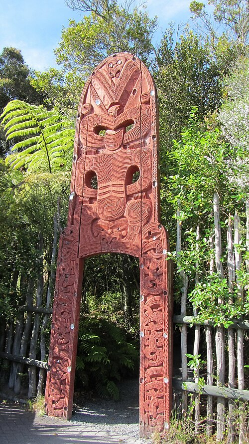
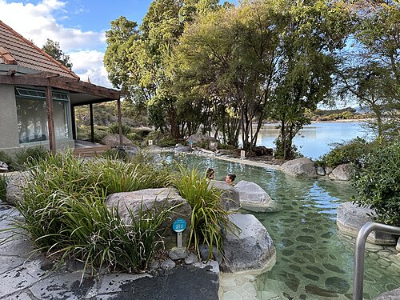
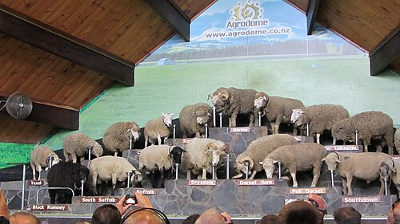

This map shows 12 of the most-searched sights in Rotorua as photo spots, ranked by how often people search for them: Te Puia, Polynesian Spa, Agrodome, Kuirau Park and Whakarewarewa Village lead the list. Every spot has a pin on the subject and a phone icon showing where to stand, with tips for shooting it on your phone: which lens to use, how to frame it, a settings tip and the best time of day. Directions and Navigate buttons take you to the standing point on foot or by public transport. 3 spots are free to view; the full map is for members.
The 3 free photo spots
1Te Puia

Te Puia sits in the Whakarewarewa geothermal valley in Rotorua. It is home to the Pōhutu geyser, bubbling mud, steaming vents and the New Zealand Māori Arts and Crafts Institute. The Institute grew out of a carving school founded in 1926 by Sir Āpirana Ngata, and the current Institute opened in 1963. Guided tours through the valley go back to the mid-19th century and now run under the Te Puia name. For a phone photo, the most useful spot is the Lower Whaka Lookout, an elevated wooden platform on the Pohaturoa (yellow) Track in Whakarewarewa Forest. It is a short walk through the redwoods and costs nothing. From there you look down over the whole valley, with Pōhutu, the mud lake, the steaming vents and the town beyond. The view is wider and clearer than the close-up shots from geyser level, although you are well above the geyser. Pōhutu erupts roughly 20 times a day, but steam can hide it between eruptions, so be ready to wait. If you want a close view of an eruption, with the plume rising up to about 30 metres, Geyser Flat inside the park is the alternative, and it needs a paid Te Puia ticket.
Where it is: Te Puia is in the Whakarewarewa area of Rotorua, beside the geothermal valley and Whakarewarewa Forest. The Lower Whaka Lookout is in Whakarewarewa Forest, looking down over the valley.
Shooting it on your phone
Lens: Start with the default lens (1x) to take in the whole valley, then try telephoto (2x-5x, depending on your phone) to bring Pōhutu and its steam closer. Use the ultra-wide (0.5x) only if you want the redwood trees and platform rail in the frame.
Where to stand: Stand on Lower Whaka Lookout (elevated wooden platform on the Pohaturoa (yellow) Track, in Whakarewarewa Forest). A high, wider view over Te Puia's geothermal valley, with the Pōhutu geyser, the mud lake and steaming vents, with the town beyond. The elevated wooden platform on the Pohaturoa (yellow) Track in Whakarewarewa Forest. From the platform you look down on Te Puia's geothermal valley, with the Pōhutu geyser, the mud lake and the steaming vents, and the town beyond.
Framing: Switch on gridlines and put the steam plume on one of the vertical lines, with the valley floor in the lower third and the town in the distance. Frame a wide shot first, then zoom in for a second shot of the geyser. If you want a close-up of an eruption from Geyser Flat instead, that is the paid option inside the park.
Settings tip: Tap the steam or geyser to set focus, then drag the exposure slider down slightly so the white steam keeps its detail. Try Live Photos to catch an eruption starting, and take several shots while you wait.
Best time: Pōhutu erupts roughly 20 times a day, so time of day matters less than patience: allow a while for the steam to clear. Early morning or late afternoon may be more comfortable for the light, since you will be facing north-west.
2Polynesian Spa

Polynesian Spa is a geothermal bathing complex on the shore of Lake Rotorua. It photographs well because steaming pools, the open water of the lake and the greenery of the neighbouring park all fit into one scene. Local Māori bathed here for centuries in an acidic pool called Te Pupunitanga, now known as Priest's Bath. The European story starts in 1878, when a Catholic priest, Father Mahoney, bathed regularly in hand-dug pools on this spot and found his arthritis eased. The Pavilion Bath House opened in 1882 and the Ward Baths followed in 1931. The government leased the Ward Baths to a private company in 1972, and the site has been known as Polynesian Spa since then. From there you can get the spa's lakefront pool area and Lake Rotorua in one frame, with the park's historic gardens behind the shoreline. Keep the lake on one side and the pools on the other so the photo has a clear foreground and background. Steam moves quickly, so take a few shots a second or two apart and pick the one where it shapes best. If you want a different angle, shoot along the shoreline so it leads the eye towards the pools. Please respect the privacy of bathers and avoid framing people who are in the water.
Where it is: Polynesian Spa sits on the shore of Lake Rotorua, right next to Government Gardens, close to the town's lakefront.
Shooting it on your phone
Lens: Start with the ultra-wide (0.5x) to take in the lake, the pool area and the gardens together. Switch to the default lens (1x) for a cleaner, less stretched view. Use telephoto (2x-5x, depending on your phone) to pick out steam rising from the pools.
Where to stand: Stand in Government Gardens (lakeside path along the Lake Rotorua shore, facing the spa complex). The spa's lakefront pool area and Lake Rotorua in one frame, with the park's historic gardens behind the shoreline. From here the photo shows the spa's lakefront pool area and Lake Rotorua in one frame, with the park's historic gardens behind the shoreline.
Framing: Turn on gridlines and place the shoreline on a lower third line, with the pools and steam on the other third. Keep the horizon level, because the lake makes any tilt obvious. Use a little of the lake edge or the garden edge in the foreground to give depth.
Settings tip: Tap on the steam or the pool surface to set focus, then drag the exposure slider down slightly so the steam does not turn white. Try a Live Photo to catch the movement of the steam, then choose the best frame.
Best time: Choose a time when the light is soft and the sun is low rather than overhead; steam is usually easier to see against a darker background.
3Agrodome

The Agrodome is a farm theme park in Rotorua, and for a phone photographer the easy win is the giant Shaun the Sheep statue on the lawn outside. It makes a cheerful character shot, and it works well with a family member or friend posing alongside. The Agrodome opened in 1971, founded by Godfrey Bowen, a champion sheep shearer, and local farmer George Harford. It has been majority-owned by Ngāi Tahu Tourism since 2011. Today it keeps 26 sheep breeds, and the National Kiwi Hatchery moved into a new building here in December 2023. Farm shows with shearing and animal demonstrations run three times a day, so there is plenty of life around the grounds if you want a busier frame. Start with the statue, then take a second picture from the Woollen Mill Cafe area, where the view opens out across the working farm and its paddocks. Take a wide shot first to show the whole scene, then step in for a closer one with the statue's face filling more of the frame. Stay out of the way of other visitors. Parts of the site may be ticketed, so check the official site before you go.
Where it is: The Agrodome is a farm theme park in Rotorua.
Shooting it on your phone
Lens: Use the default lens (1x) for the main shot of the statue. Switch to the ultra-wide (0.5x) if you want the whole lawn in the frame. For the farm views from the cafe area, try telephoto (2x-5x, depending on your phone) to pick out the paddocks.
Where to stand: Stand right at the subject: the phone icon on the map marks the spot. The giant Shaun the Sheep statue is on the lawn outside the Agrodome, so head east towards it to take the photo.
Framing: Turn on the gridlines and place the statue on one third of the frame, leaving the surroundings in the other two thirds. Crouch slightly so the statue stands tall against the background. If someone is posing, have them stand beside the statue rather than in front of it so both show. For a second picture, go to the Woollen Mill Cafe area and shoot across the working farm and paddocks.
Settings tip: Tap the statue to set focus, then slide the exposure down a little if its pale surface looks washed out. Portrait mode can soften the background if you are photographing a person next to the statue. Wipe your lens before you start.
Best time: Daytime, when the grounds are open and the statue is well lit. If the sun is strong, move around until it is not shining straight into your lens.
9 more spots for members
These spots are on the map as grey numbered pins. Where to stand, the phone tips, photos and directions for them come with Explorer membership.
- 4Kuirau Park · members
- 5Whakarewarewa · members
- 6Whakarewarewa Forest · members
- 7Pōhutu Geyser · members
- 9Blue Baths · members
- 10Government Gardens · members
- 11Rotorua Museum · members
- 12Ōhinemutu · members
- 14Te Papaiouru Marae · members
Get every spot with Explorer membership
Explorer opens every spot on every map in the library: where to stand, how to frame it on your phone and how to get there, plus the Xdatrys Maps app with maps saved on your phone for use without signal. $9.99 a month or $59.99 a year; cancel any time.
Join Explorer Compare free and Explorer
Not ready to join?
Get Pocket Lens, our free daily smartphone travel photography newsletter.
Free, and you can unsubscribe at any time. If the form does not show, sign up on our newsletter page.
Questions
What are the top photo spots in Rotorua?
The first three on this map are Te Puia, Polynesian Spa and Agrodome. They are ranked by how often people search for them. The full map has 12.
Where should I stand to photograph the Te Puia?
Stand on Lower Whaka Lookout (elevated wooden platform on the Pohaturoa (yellow) Track, in Whakarewarewa Forest). Start with the default lens (1x) to take in the whole valley, then try telephoto (2x-5x, depending on your phone) to bring Pōhutu and its steam closer.
When is the best time to photograph Polynesian Spa?
Choose a time when the light is soft and the sun is low rather than overhead; steam is usually easier to see against a darker background.
How do I get to the Agrodome?
There are no Underground, train or tram stops listed nearby.
Credits
Map data © OpenStreetMap contributors (ODbL); base map built with Protomaps from OpenStreetMap data. Photos from Wikimedia Commons, credited under each photo with their licence. Background reading for the free spots: New Zealand Māori Arts and Crafts Institute, Polynesian Spa, Agrodome (Wikipedia, CC BY-SA). Access rules and opening times change: check before you go.